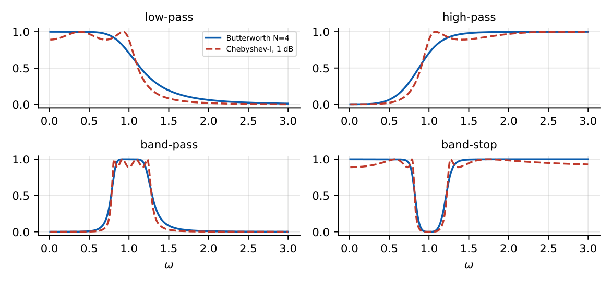

Appendix I
Standard Filter Responses

| Family | Passband | Stopband / other |
|---|---|---|
| Butterworth | maximally flat | monotonic; \(-20N\) dB/dec |
| Chebyshev I | equiripple | monotonic; steeper than Butterworth |
| Chebyshev II | maximally flat | equiripple |
| Elliptic (Cauer) | equiripple | equiripple; lowest order |
| Bessel | maximally flat delay | gentle roll-off |